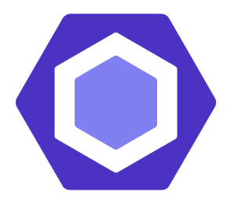
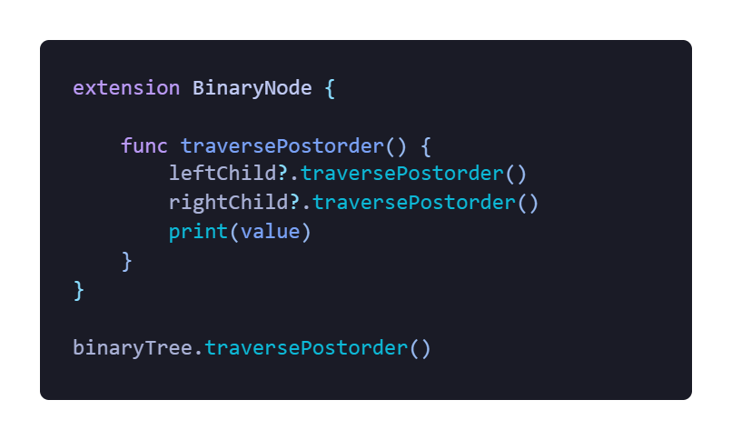
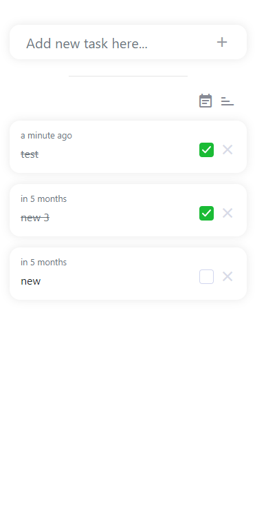
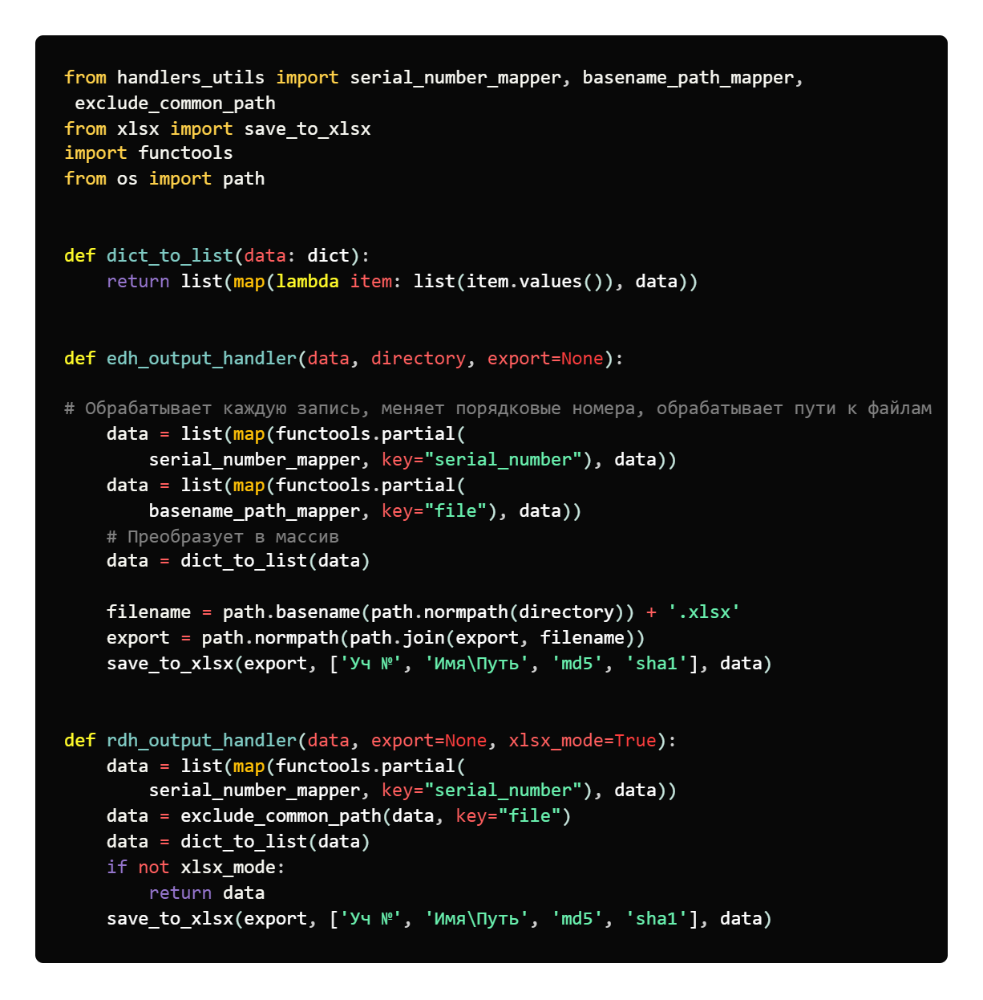

Hard/Soft skills навыки
— Стремление к правильному
подходу в
разработке ПО, с
учетом
архитектуры,
дальнейшего масштабирования и
расширения, а так же написание кода с использованием шаблонов проектирования и
best-practices взамен
"изобретению велосипеда", в этом мне активно помогают книги известных авторов,
таких
как
Роберт Мартин, Стив Макконнелл и другие.
Мне кажется, что один из самых важных навыков современного разработчика, это написание не просто работающего кода, а написание такого кода который вы сможете понять и модифицировать вернувшись к нему спустя время, для этого и нужна архитектура



Анализ
и использование
современных средств
разработки
ускоряющих
процесс
написания ПО, включает в себя:
- Подбор подходящего рабочего окружения, начиная с выбора подходящей ОС и заканчивая использованием специализированных IDE для разработки конкретного продукта и технологии
- Использование системы контроля версий
- Работу через cистемы управления проектами (Slack, Jira, Trello, REDMINE и.т.д)
Базовое представление об
алгоритмах и структурах
данных, в изучении
этой
сферы мне так же пригодились книги по
типу "Грокаем алгоритмы (Адитья Бхаргава)"

Быстрая адаптация к
различным
современным языкам
программирования.
Зная
один или два языка, вы сходу сможете
изучить новый, в конце концов выбор языка станет для вас чистой формальностью
которая
не
сильно повлияет на
процесс разработки, как в свое время это было у меня
Мои последние проекты
Разработка UI/UX

Разработка производственного ПО с использованием более сложных алгоритмов и структур данных

Оконное приложение на Python, для рекурсивного хеширования файлов внутри
директорий файловой
системы и автоматического сохранения отчета в формате
Excel
Использованно:
- Язык Python
- Библиотека Tkinter для создания UI
- Pyinstaller для сборки в .exe
- Shell скрипты для автоматизации сборки и тестирования
- Сторонние библиотеки вроде: openpyxl, hashlib, os, functools
Сертификаты